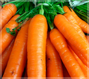

Our products

- Carrot
- The carrot is a root vegetable, usually orange, purple,and yellow cultivars exist.

- Brinjal
- It is a delicate, tropical often cultivated as a tenderin temperate climates. The stem is often spiny.

- Weat
- Wheat is called as "soft" or "weak" if gluten content is low, and are called "hard" or "strong"

- Cucumber
- It has three main varieties of slicing, pickling, and seedless, within these varieties, several cultivars have been created.

- Corn
- It is starch obtained from the endosperm of the kernel. Corn starch is a common food ingredient.

- Capsicum
- Capsicum also known as peppers is a genus of flowering plants in the nightshade.

- Strawberry
- It is cultivated worldwide for its fruit. The fruit is widely appreciated for its characteristics.

- Cabbage
- Cabbage was most likely domesticated somewhere in Europe before 1000 BC.

- Pumpkin
- A pumpkin is a cultivar of a squash plant, most commonly of Cucurbita that is deep yellow to orange coloration.